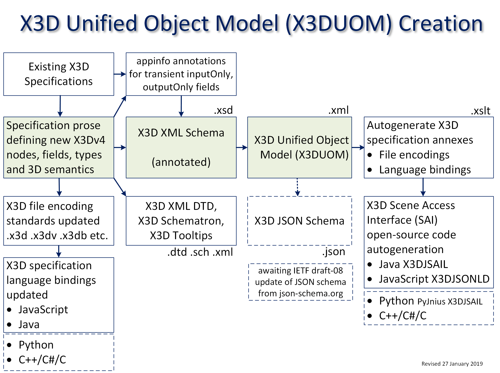

|
X3D Unified Object Model (X3DUOM) |
The X3D Unified Object Model (X3DUOM) is a full set of object-oriented interfaces for all nodes, fields and statements in the X3D Architecture Specification.
Description | Design and Production | Implementation and Evaluation | JavaScript assets | Java assets | C, C++, C# assets | Python assets | Contact
The X3D Unified Object Model (X3DUOM) is a full set of object-oriented interfaces for all nodes, fields and statements in the X3D Architecture Specification.
Available source:
X3DUOM is a validatable expression of X3D relationships that can be applied to implement various X3D file encodings and programming-language bindings.

To build the X3DUOM, first the X3D XML Schema is annotated to include all object-oriented information for X3D nodes and fields.
All fields are included regardless of accessType
(initializeOnly, inputOutput, inputOnly, outputOnly).
The schema is then read and converted into a simple XML file that fully lists the object-oriented characteristics of all X3D nodes, statements and attributes.
The availability of X3DUOM as a parsable XML file means that matching codebases in different programming languages can all be created for producing and manipulating valid X3D models.
X3DUOM source for all versions of X3D:
Also available: .json (experimental)
This project was originally named Object Model for X3D (OM4X3D). It has been renamed as X3DUOM to better describe the unified nature of common X3D APIs across multiple programming languages.
 As described on the
Web3D Consortium Recommended Standards page,
Extensible 3D (X3D) Graphics provides a
coordinated set of steadily evolving ISO standards.
As described on the
Web3D Consortium Recommended Standards page,
Extensible 3D (X3D) Graphics provides a
coordinated set of steadily evolving ISO standards.
Tandem work on Java, JavaScript and Python by Don Brutzman and John Carlson is expected to provide multiple implementation confirmations and possibly small revisions to multiple specifications including the governing ISO/IEC 19775-2 X3D Scene Access Interface (SAI) abstract specification.
Development efforts for each of the following programming-language bindings are providing the full capabilities of the X3D Architecture in language-specific ways. Once complete, this body of work will provide unparalleled breadth and portability for export and utilization of Web-based 3D graphics.
BuildX3dPythonPackageFromX3duom.saxon applies
Available online at https://www.web3d.org/specifications/X3DUOM.html
Discussion regarding X3D Unified Object Model (X3DUOM) takes place on x3d-public at web3D.org mailing list (subscribe).
Questions, suggestions, additions and comments about this X3D Unified Object Model (X3DUOM) page are welcome. Please send them to Don Brutzman (brutzman at nps.edu).
Version control of these assets is maintained at https://sourceforge.net/p/x3d/code/HEAD/tree/www.web3d.org/specifications/X3DUOM
Updated: 10 August 2020
{kind=link}